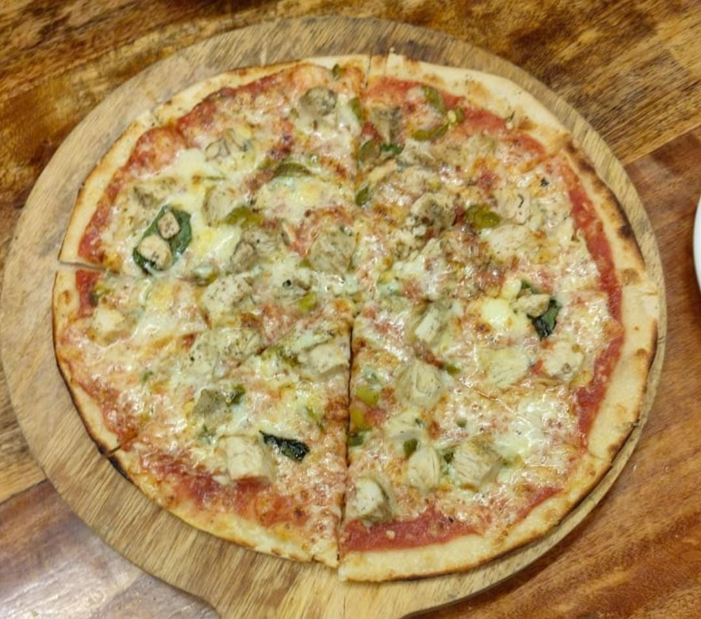

Pizza

Description
This homemade pizza is crispy on the outside, soft on the inside, and loaded with rich flavors. It's a simple and delicious way to enjoy a classic favorite right from your own kitchen.
Perfect for family dinners, gatherings, or a cozy night in, this recipe will give you a pizza with the perfect balance of sauce, cheese, and toppings.
Ingredients
- 2 cups all-purpose flour
- 1 packet (2 1/4 tsp) instant yeast
- 3/4 cup warm water
- 1 tbsp olive oil
- 1/2 tsp salt
- 1/2 cup pizza sauce
- 1 cup shredded mozzarella cheese
- Chicken
Steps
- Preheat the oven to 220°C (425°F).
- In a mixing bowl, combine warm water, yeast, and olive oil. Let it sit for 5 minutes.
- Add flour and salt to the mixture and knead into a smooth dough.
- Let the dough rest for 30 minutes until it doubles in size.
- Roll out the dough into a round shape and place it on a baking sheet.
- Spread the pizza sauce evenly over the dough.
- Sprinkle cheese and your desired toppings.
- Bake for 12-15 minutes until the crust is golden and the cheese is bubbly.
- Let it cool for a few minutes, then slice and enjoy!
Home